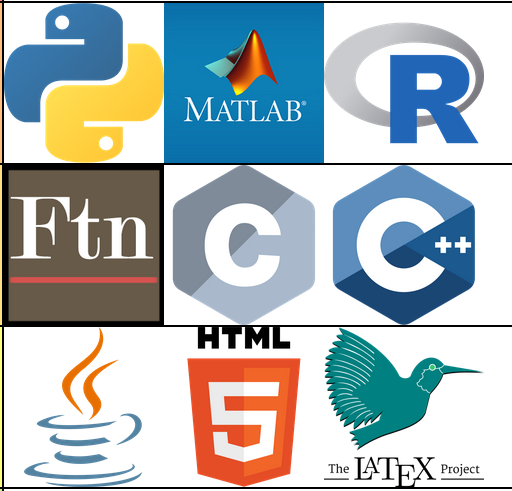
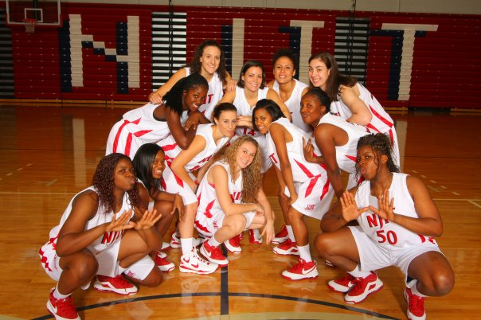

Ivana Seric
Sr. Product Scientist at Teamworks
See my LinkedIn page for more up-to-date information.
These are a few of my favorite things
Sports Analytics
My first job in sports analytics was with the Philadelphia 76ers. This "day-in-life" video was created by Bloomberg Technology's Aki Ito, and recorded by Tom Connors and David Nicholson.
Data Visualization
Data Visualization has always been my favorite part of data science. With appropriate visualizations, we can answer questions with data without even building any models! I've been using D3.js to build interactive visualizations.
Computational Fluid Dynamics
I studied Computational Fluid Dynamics (CFD) in graduate school! CFD consists of some of my favorite things combined in one: Mathematical Modeling, Programming and Data Visualization!
Mathematical Modeling
I enjoy building models that describe physics around us from first principles. My first project in graduate school was studying behavior of ferrofluids by building a reduced model of fluid behavior coupled with magnetic field! In addition to being fun liquids, ferrofluids could have applications in medicine and photography.

Programming
I like learning new programming languages and frameworks! At each point in time I extensively used one or more of these: Fortran, C, C++, MATLAB, R, Python, HTML, CSS, JavaScript. I'm currently learning more Front-end development and React!

Basketball
Basketball took me places I otherwise would never go and introduced me to
so many friends from all over the world! I started playing when I was 7 years old, and I
played for
Croatian youth national teams, and at New Jersey Institute of Technology.
Go Highlanders!
Education
Ph.D. Mathematical Sciences: Applied Mathematics
New Jersey Institute of Technology
Thesis:
Direct computations of Marangoni-induced flows and contact line
dynamics using a volume of fluid method in 3D.
B.S. Mathematical Sciences: Applied Mathematics
New Jersey Institute of Technology
Concentration: Applied mathematics
Capstone project:
Instability of gravity-driven flow of liquid crystal films